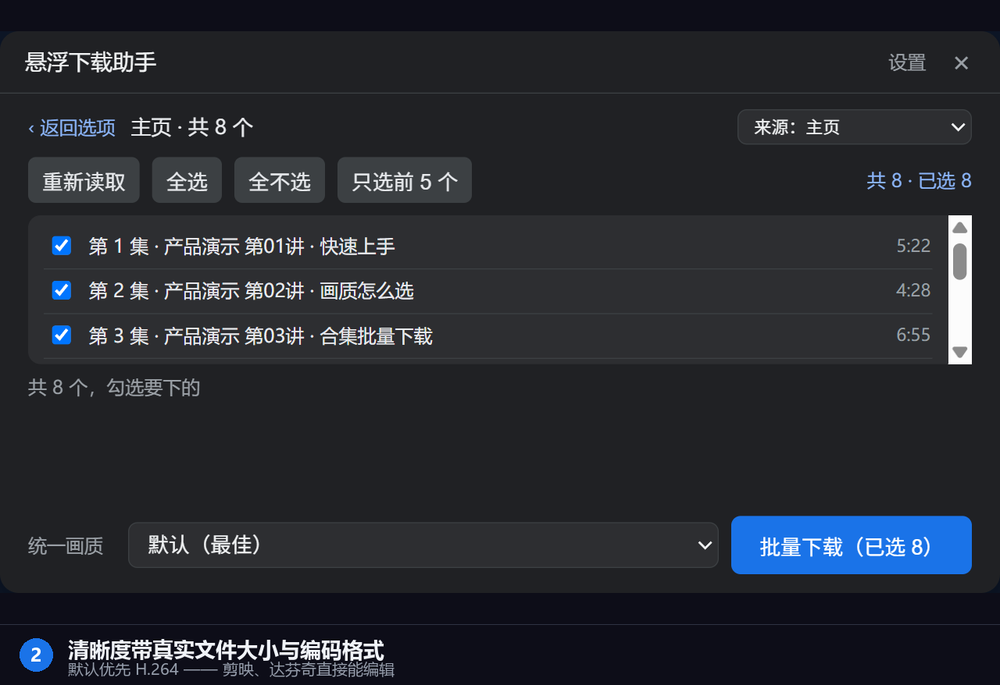
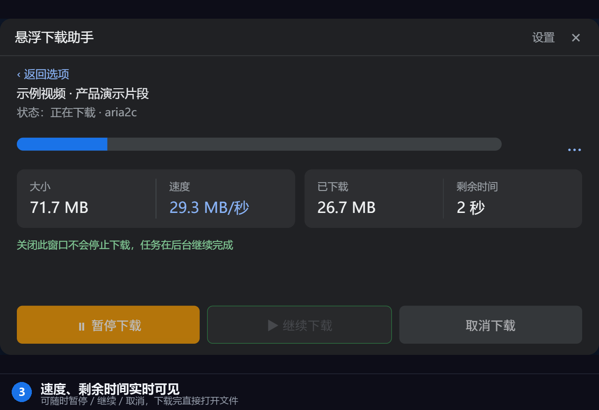
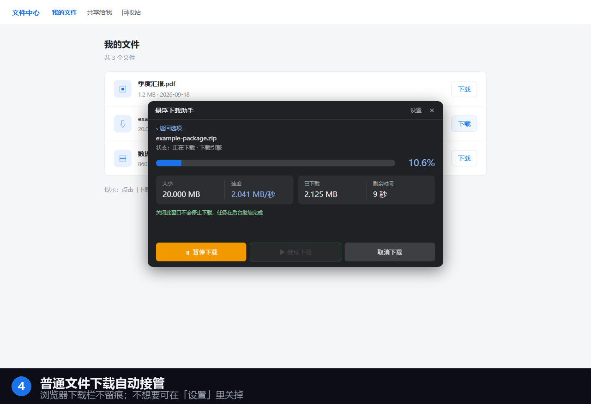
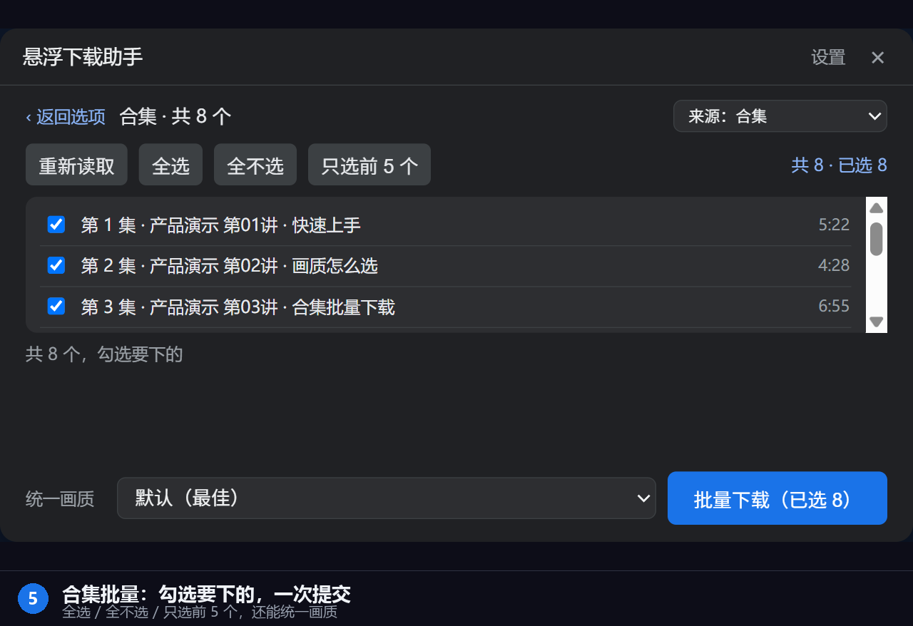

下面都是真实界面截图（不是示意图）。




分清「深度适配」和「通用能力」—— 我们只写真实支持到的。
画质列表（带真实大小与编码）、合集 / 分P / 系列、UP主主页、播放列表。
画质列表、播放列表、频道页。
任何网站的下载链接都能接管，跟站点无关。
其他视频站点也有机会下到；下不到时会明确提示，不会假装成功。
抖音 / 快手 / 小红书 / 视频号等正在适配中——目前属于「有机会下到、但不保证」。 想让某个平台优先支持？到 Issues 里点名， 反馈多的排在前面。
画质档位由源站提供什么决定；读不到就如实提示，不猜数字。
列出所有真实可用清晰度，带文件大小与编码格式，默认优先 H.264。
同一个视频也可以只取音轨。
一次勾选多集，统一画质批量提交；下载中可全部暂停 / 继续 / 取消。
zip / exe / pdf / 图片 / 安装包等，任意网站的下载链接。
为「经常要存素材的人」做的，不是通用下载器。
打开视频页面，播放器右上角出现「下载视频」按钮，点一下选画质就能下。
列出所有可用清晰度，带真实文件大小与编码格式，默认优先 H.264。
画质列表、合集、分 P、UP主主页、播放列表都能识别。
在网页上点下载，直接由本机下载器接手，浏览器下载栏不留记录。
列表里勾选要下的（全选 / 只选前 5 个），一次提交整批；下载中可全部暂停 / 继续 / 取消。
本机自研下载引擎，多连接并行（上限 16），比浏览器单线程快得多。
进度、速度、剩余时间一目了然，可暂停 / 继续 / 取消。
不想开网页也行，把链接粘进面板就能开始。
本机程序免安装直跑：不写开机自启、不建桌面图标、不改浏览器设置。
先用两分钟装好，之后就是一键的事。
安装 悬浮下载助手.exe」。它只写当前用户范围，
不需要管理员权限，不写开机自启、不建桌面图标、不改浏览器设置。装完会自动启动。遇到问题先扫一眼这里，能省下我们来回好几轮。
不能。浏览器扩展受平台限制，做不了多连接下载、格式转换、视频解析这些重活。 所以架构上分成两半：扩展负责页面里的入口和进度显示，本机程序负责真正下载。 这也正是它比纯浏览器扩展快很多的原因。
八成是本机程序没跑起来。做两件事：
%LOCALAPPDATA%\FDMHelper 目录手动双击启动程序。还不行就到 Issues 报一下，附上本机程序目录里的日志。
不会偷偷做，但确实默认会接手普通文件下载 —— 这是我们特意设计的（避免浏览器下载栏留记录，也为了更快）。
你能随时关掉：扩展面板右上角「设置」→ 取消勾选「接管浏览器下载（普通文件也交给下载助手）」。 关掉之后，所有普通文件下载完全按浏览器原样进行，扩展不再插手。
不会。本软件没有任何开发者服务器，不收集、不上传你的浏览记录、下载内容或 Cookie。
扩展只与本机 127.0.0.1 上的程序通信，这个地址不经过互联网。
详见 隐私政策。
这是有意为之的设计：浏览器自带的那份下载会在弹出任何提示之前就被取消并抹掉记录， 免得你在下载栏里看到一堆没用的记录。真正的任务在本机下载器的面板里。
在扩展面板的「保存到」里能看到和修改，默认为你的下载目录。 下载完成后面板里有「打开文件」和「打开所在文件夹」两个按钮。
主要针对 B站 和 YouTube 做了深度适配；普通文件下载（任意网站）全站通用。 国内其他平台在陆续适配中 —— 你也可以在 Issues 里点名。
可以。把解压后的文件夹拷过去，双击安装程序即可。免安装、无注册表残留。
这个软件还在快速迭代 —— 你的反馈会直接决定下一个版本改什么。
不管是 bug、卡住的地方，还是「这里多一个按钮会顺手很多」这种小事，都欢迎说。
zhaocai4131@gmail.com（邮件容易漏，能用 GitHub 还是推荐走上面）